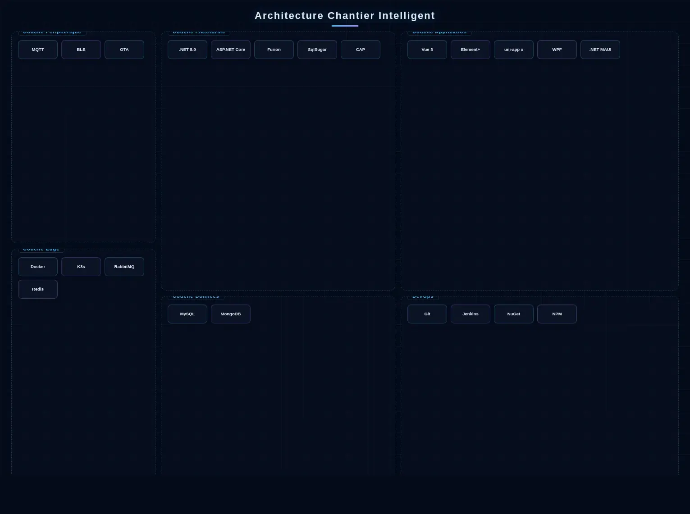

Architecture de la Solution

Architecture métier chantier intelligent
Le Chantier Intelligent adopte une architecture à trois niveaux Appareil-Edge-Cloud. La couche appareils déploie des dispositifs de perception IoT pour le positionnement du personnel, la surveillance environnementale, le monitoring de grues à tour et la reconnaissance AI de casques de sécurité, se connectant aux passerelles edge via MQTT / LoRa / 4G. La couche edge effectue l'agrégation de données en temps réel et les décisions d'alerte de danger local via des nœuds de calcul locaux, assurant la sécurité de production dans des environnements à faible connectivité. La plateforme cloud construit un centre de gestion de projets sur des microservices .NET 8.0 + ASP.NET Core + Furion, avec DotNetCore.CAP supportant la cohérence transactionnelle pour les alarmes critiques et les bons de travail, des clusters RabbitMQ pilotant les événements sur cinq domaines métier (qualité, sécurité, planning, personnel, équipements), MySQL stockant les registres de projets, MongoDB stockant les images d'inspection et les données séries temporelles des capteurs, Redis Cluster mettant en cache l'état en temps réel du site, et SqlSugar fournissant le mappage ORM multi-sources. Le côté gestion construit un tableau de bord de commande PC avec Vue 3 + Element Plus, complété par une application d'inspection de supervision et un mur de données TV développés avec uni-app x (Vapor Mode), et des clients de gestion de bureau construits sur WPF ou .NET MAUI pour la supervision parallèle de projets multiples et la construction lean pilotée par les données. DevOps utilise Git + Jenkins + NuGet/NPM pour l'intégration et le déploiement continus, avec Docker + Kubernetes pour le déploiement élastique.
Composition de la Solution
Modules Principaux
Scénarios d'Application

Construction de bâtiments
Contrôle sécurité et qualité pour la construction de résidences hautes et complexes commerciaux.

Ingénierie municipale
Surveillance environnementale et gestion de l'avancement pour les projets de routes, ponts et canalisations.

Transport ferroviaire
Surveillance sécurité fondation profonde et coffrage haut pour la construction de stations de métro et tunnels.

Usines industrielles
Surveillance installation structure métallique et gestion sécurité du personnel pour la construction de grandes usines.

Avantages de la Solution
Premier Prix MOHURD
Le système a remporté le Premier Prix du Prix Scientifique et Technologique du ministère chinois du Logement, avec des droits de propriété intellectuelle indépendants complets.
Vision IA leader
La précision de l'analyse visuelle IA atteint des niveaux leaders de l'industrie, avec reconnaissance du casque, détection du gilet réfléchissant et alertes zones dangereuses.
Couverture multi-terminaux complète
La collaboration multi-terminaux couvre tous les rôles de projet, avec support complet pour Mini Programme WeChat, Web PC, Tableau de Bord TV, APP et H5.
Une plateforme gère le chantier
Réalisant véritablement « une plateforme gère le chantier », couvrant six dimensions : personnel, sécurité, qualité, planning, matériaux et environnement.
Valeur de la Solution
Pratique Projet
Réalisations du Projet
Le Système de Gestion de Chantier Intelligent du FIRS de Lagos a remporté le Premier Prix du Prix Scientifique et Technologique du Ministère du Logement et du Développement Urbain de Chine, démontrant pleinement l'expertise professionnelle de l'entreprise dans l'intelligence du bâtiment et les grands projets d'ingénierie.